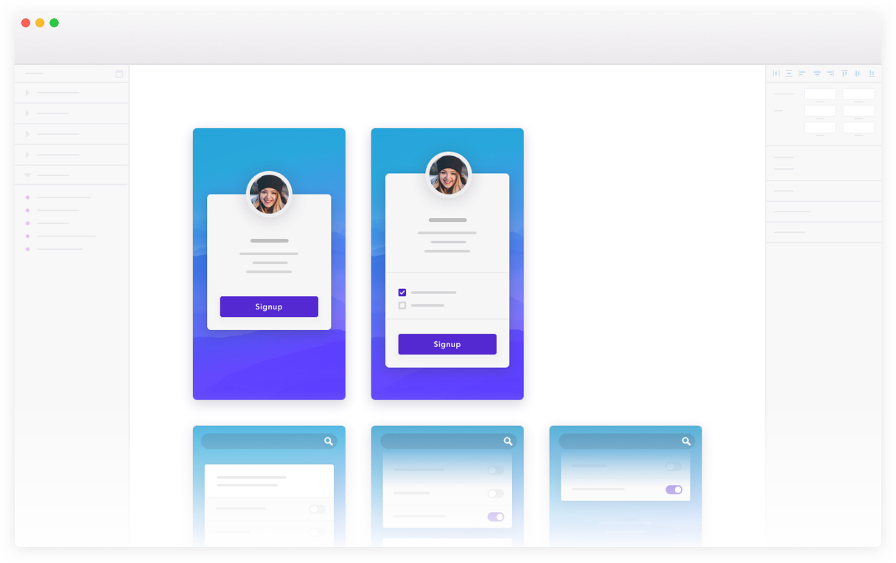

Find plugins to power up your Sketch workflow
Sketch is a design app that let’s you create user interfaces, icons, and graphics.
Learn more

Find a sketch plugin by category
Search
Top recent Tweets for Sketch Plugin